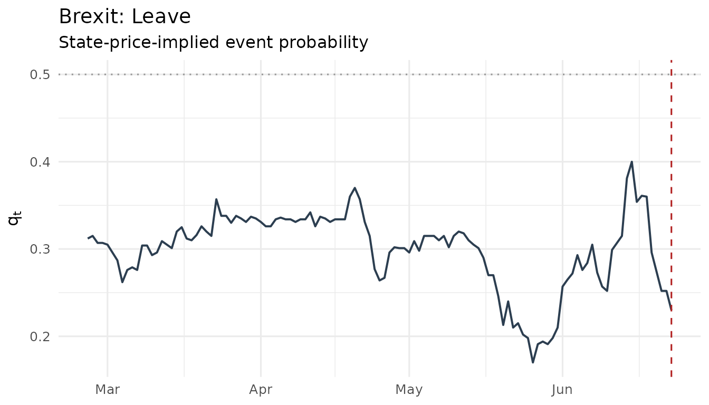
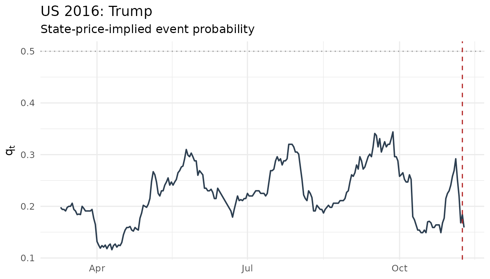
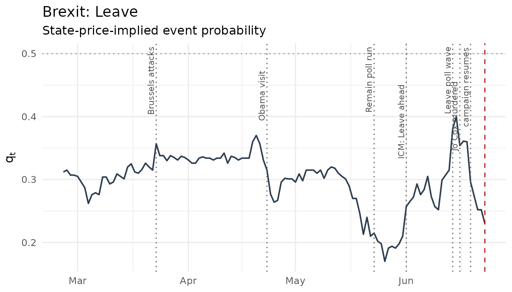
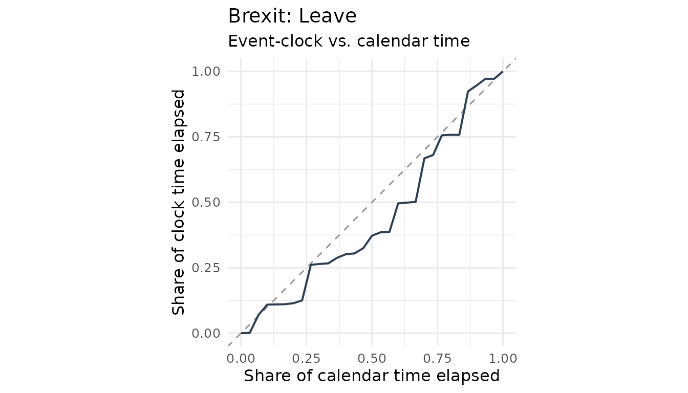
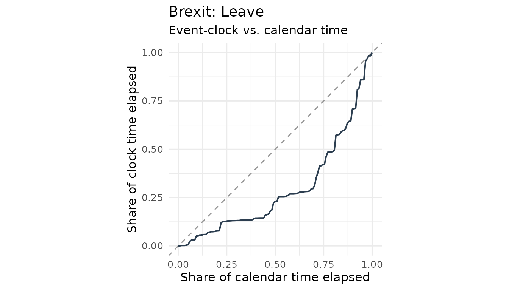
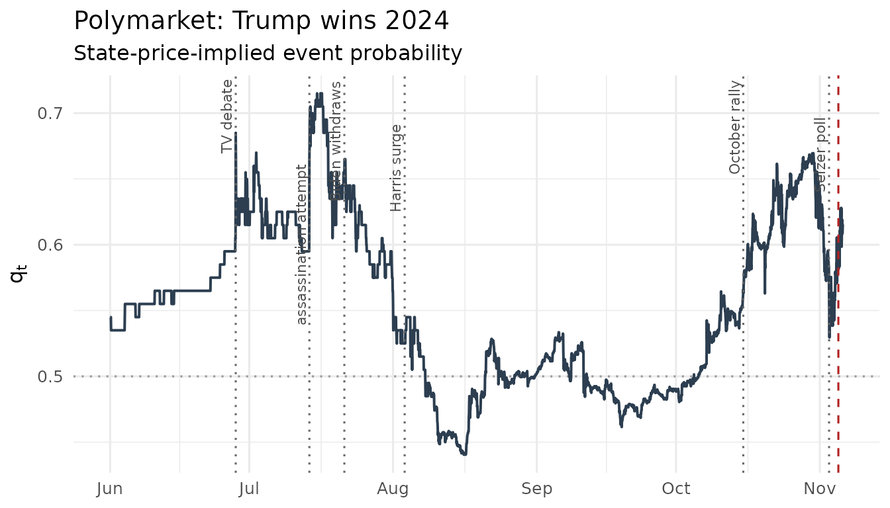
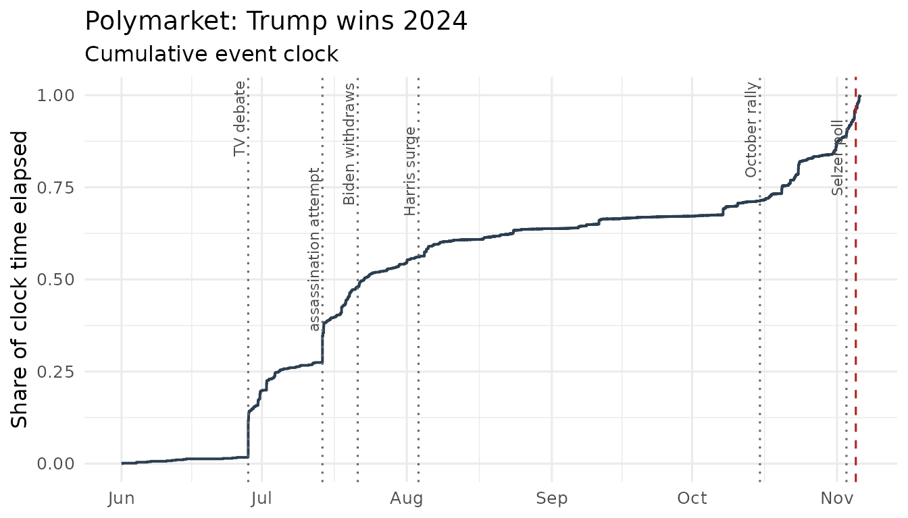
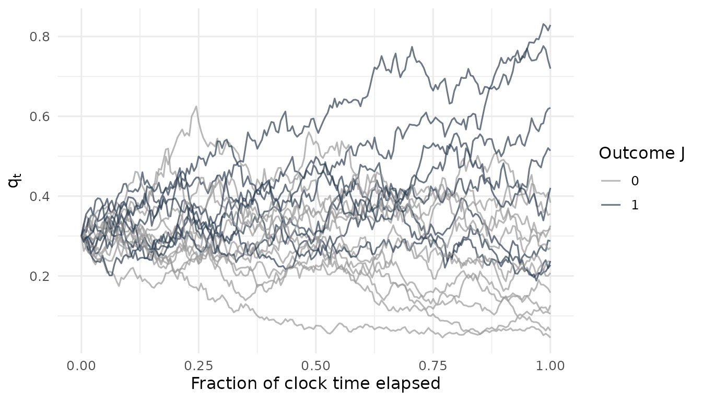

Measuring the event clock: Brexit, the 2016 U.S. election, and Polymarket
Source:vignettes/eventclock-brexit.Rmd
eventclock-brexit.RmdThe event clock in one paragraph
Ahead of a scheduled event — a referendum, an election, a central-bank decision — markets learn. The event clock measures how much outcome-relevant information has arrived and when: event-clock time is the quadratic variation of the log-odds of the state-price-implied event probability ,
Because quadratic variation ignores drift and is invariant under equivalent measure changes, needs no assumption about risk premia, and any constant level distortion of (discounting, a constant state-price tilt) drops out. The concept, identification results, and the empirical applications reproduced below are developed in Hanke, Schadner, Stöckl, and Weissensteiner (Working Paper), Learning Before Scheduled Events: Prediction Markets, State Prices, and Option Valuation.
Two classic event windows: Brexit and the 2016 U.S. election
The package ships the two daily event-probability series used in the
working paper, both derived from betting quotes (see
?brexit2016):
data(brexit2016)
data(us2016)
ep_gb <- as_event_prices(brexit2016,
time = "date", price = "q_leave",
market_id = "Brexit: Leave", event_date = as.Date("2016-06-23")
)
ep_us <- as_event_prices(us2016,
time = "date", price = "trump",
market_id = "US 2016: Trump", event_date = as.Date("2016-11-08")
)
plot_q(ep_gb)
plot_q(ep_us)
Reproducing the headline information-time table
The working paper evaluates the clock from the one-month valuation date (May 24 / October 10, 2016) over one-week, two-week, and one-month horizons, with a battery of robustness variants:
gb <- event_clock(ep_gb,
from = as.Date("2016-05-24"),
to = c(`1W` = as.Date("2016-05-31"), `2W` = as.Date("2016-06-07"),
`1M` = as.Date("2016-06-23"))
)
us <- event_clock(ep_us,
from = as.Date("2016-10-10"),
to = c(`1W` = as.Date("2016-10-17"), `2W` = as.Date("2016-10-24"),
`1M` = as.Date("2016-11-08"))
)
tab <- rbind(
cbind(case = "Brexit", as.data.frame(gb[, c("horizon", "method", "A")])),
cbind(case = "U.S. election", as.data.frame(us[, c("horizon", "method", "A")]))
)
knitr::kable(
stats::reshape(tab,
idvar = c("case", "horizon"), timevar = "method", direction = "wide"
),
digits = 3,
col.names = c("Case", "Horizon", "RV", "Truncated", "Bipower",
"Largest-1", "Largest-2")
)| Case | Horizon | RV | Truncated | Bipower | Largest-1 | Largest-2 | |
|---|---|---|---|---|---|---|---|
| 1 | Brexit | 1W | 0.064 | 0.064 | 0.060 | 0.029 | 0.009 |
| 6 | Brexit | 2W | 0.166 | 0.166 | 0.141 | 0.096 | 0.062 |
| 11 | Brexit | 1M | 0.510 | 0.510 | 0.374 | 0.425 | 0.341 |
| 16 | U.S. election | 1W | 0.015 | 0.015 | 0.011 | 0.010 | 0.005 |
| 21 | U.S. election | 2W | 0.046 | 0.046 | 0.025 | 0.021 | 0.016 |
| 26 | U.S. election | 1M | 0.370 | 0.259 | 0.386 | 0.259 | 0.200 |
This reproduces the published table: Brexit of 0.064 (1W), 0.166 (2W), and 0.511 (1M) with bipower 0.375; U.S. election 0.015, 0.046, and 0.370 with bipower 0.386 and truncated 0.259.
Two details worth noting:
-
Truncation vs. largest-move exclusion. The
truncation rule (drop increments beyond 3 robust standard deviations)
binds for the U.S. window — where it removes exactly the largest move
and matches the published 0.259 — but not for the Brexit window, whose
largest move stays inside the threshold. The published Brexit
“truncated” value (0.426) corresponds to
largest1. With daily data and short windows, always compare both columns. - Windows are anchored, not trailing. “1M” runs from the valuation date to the event date; observations are calendar-daily including weekends.
The clock over time
The most instructive object is not the point estimate but the
path of the clock — when did the information actually arrive?
The jumps of the cumulative clock have names: they are the campaign’s
news days. (The attributions below were found by ranking the days by
their contribution dA to the clock —
event_clock_path() returns exactly that column.)
# tiny helper used throughout: dotted line + label per event
# (labels alternate between two heights so that close-by events stay legible)
mark_events <- function(p, events) {
drop <- rep(c(1.05, 1.55), length.out = nrow(events))
p +
ggplot2::geom_vline(
xintercept = events$date, linetype = 3, color = "grey40"
) +
ggplot2::annotate("text",
x = events$date, y = Inf, label = events$label,
angle = 90, vjust = -0.35, hjust = drop, size = 2.9, color = "grey30"
)
}
events_gb <- data.frame(
date = as.Date(c(
"2016-03-23", "2016-04-23", "2016-05-23", "2016-06-01",
"2016-06-14", "2016-06-16", "2016-06-19"
)),
label = c(
"Brussels attacks", "Obama visit", "Remain poll run", "ICM: Leave ahead",
"Leave poll wave", "Jo Cox murdered", "campaign resumes"
)
)
path_gb <- event_clock_path(ep_gb)
mark_events(plot_q(ep_gb), events_gb)
mark_events(plot_clock(path_gb), events_gb)
The largest ticks of the Brexit clock, matched to the news of the day
(dL is the log-odds move of the Leave
probability):
-
Mar 22–23 — Brussels terror attacks; Leave odds
jump (
dL = +0.19). -
Apr 22–24 — Obama’s London visit (“back of the
queue”); Remain boost (
dL = -0.18). -
May 20–26 — the Remain poll run (ORB Remain +15,
Treasury/IMF warnings);
q_leavehits its sample low of 0.17. -
May 31 – Jun 1 — paired ICM phone/online polls put
Leave ahead: the campaign’s turning point (
dL = +0.26, 8% of the full-sample clock). -
Jun 10–14 — the Leave poll wave plus The Sun’s
endorsement — the single largest tick (
dL = +0.29, 10%). -
Jun 16 — the murder of Jo Cox; campaigning is
suspended (
dL = -0.20). -
Jun 19–20 — campaigning resumes, Remain recovers in
the weekend polls (
dL = -0.29, 10%).
plot_clock_vs_calendar(path_gb)
A path below the 45-degree line means information is back-loaded — it waits for the deadline; the June cluster of poll shocks is clearly visible as the late steep segment.
Real time versus ex post
Ex post, we know how much information arrived while an option was alive. In real time we do not; the paper’s benchmark annualizes the trailing 40-observation realized variation and scales it to the horizon:
event_clock_forecast(ep_us,
at = as.Date("2016-10-10"),
horizon = c(`1W` = 7, `2W` = 14)
)
#> # A tibble: 2 × 9
#> market_id at horizon horizon_days trailing n_incr n_gaps max_gap_days
#> <chr> <date> <chr> <dbl> <int> <int> <int> <dbl>
#> 1 US 2016: … 2016-10-10 1W 7 40 39 0 1
#> 2 US 2016: … 2016-10-10 2W 14 40 39 0 1
#> # ℹ 1 more variable: A_forecast <dbl>This reproduces the published real-time values of 0.068 (1W) and 0.135 (2W) for the U.S. election — the market expected far more learning than the 0.015/0.046 that actually materialized before election week.
Why levels do not matter: the wedge property
On the paper’s valuation date, the raw betting-quote probability of Leave is , while the paper works with the U.S.-dollar-numeraire state price (). The levels differ — but the clock is identical, because an (approximately) constant logit wedge has zero quadratic variation:
shifted <- brexit2016
shifted$q_leave <- ec_ilogit(ec_logit(brexit2016$q_leave) + 0.5)
ep_shift <- as_event_prices(shifted, time = "date", price = "q_leave")
c(
original = event_clock(ep_gb, from = as.Date("2016-05-24"),
methods = "rv")$A,
shifted = event_clock(ep_shift, from = as.Date("2016-05-24"),
methods = "rv")$A
)
#> original shifted
#> 0.510469 0.510469The formula book
Once and are measured, a family of closed-form objects follows from the exact logistic-normal transition law . The worked Brexit example (, ):
ec_moments(q = 0.195, A = 0.166)
#> # A tibble: 1 × 10
#> q A L E_qT E_LT var_LT sd_LT m3_LT var_qT var_qT_bound
#> <dbl> <dbl> <dbl> <dbl> <dbl> <dbl> <dbl> <dbl> <dbl> <dbl>
#> 1 0.195 0.166 -1.42 0.195 -1.47 0.170 0.413 0.000438 0.00409 0.0104
# typical revision over the window: about 5 probability points
ec_revision(q = 0.195, A = 0.166)
#> [1] 0.05102989
# probability of ending above 50% by resolution
ec_exceedance(0.5, q = 0.195, A = 0.166)
#> [1] 0.0001951016
# clock time needed to move from 19.5% to "90% sure": about 40x
# the two-week clock
ec_target_clock(q = 0.195, target = 0.9) / 0.166
#> [1] 43.55503The rule of thumb for the implied-volatility contribution of event learning, , reproduces the paper’s headline decomposition (in annualized IV percentage points, using the tenor-specific no-learning ATM volatility and the event exposures estimated in the paper):
c(
brexit_2w = 100 * ec_iv_rule(deta = -0.012, q = 0.195, A = 0.166,
sigma = 0.10590, tenor = 14 / 365),
us_2w = 100 * ec_iv_rule(deta = -0.099, q = 0.172, A = 0.046,
sigma = 0.19326, tenor = 14 / 365)
)
#> brexit_2w us_2w
#> 0.007250541 0.061679188Learning was priced at well under a tenth of a volatility point for Brexit but an order of magnitude more for the U.S. election — the lever dominates.
The event clock on live Polymarket data
The package connects to the public, keyless Polymarket APIs. The
shipped polymarket2024 dataset was downloaded with exactly
this code:
# 1. find the event and the "Yes" token
pm_search("presidential election winner 2024")
mkts <- pm_markets("presidential-election-winner-2024")
tok <- mkts$token_id[grepl("Trump", mkts$question) & mkts$outcome == "Yes"]
# 2. pull the hourly price history (chunked automatically)
ep24 <- pm_prices(tok, from = "2024-06-01", to = "2024-11-06",
market_id = "Polymarket: Trump wins 2024",
event_date = as.POSIXct("2024-11-05", tz = "UTC"))
data(polymarket2024)
ep24 <- as_event_prices(polymarket2024,
market_id = "Polymarket: Trump wins 2024",
event_date = as.POSIXct("2024-11-05", tz = "UTC")
)
events_24 <- data.frame(
date = as.POSIXct(c(
"2024-06-28 02:00", "2024-07-13 23:00", "2024-07-21 12:00",
"2024-08-03 12:00", "2024-10-15 12:00", "2024-11-03 00:00"
), tz = "UTC"),
label = c(
"TV debate", "assassination attempt", "Biden withdraws",
"Harris surge", "October rally", "Selzer poll"
)
)
mark_events(plot_q(ep24), events_24)
mark_events(plot_clock(event_clock_path(ep24)), events_24)
The jumps of the 2024 clock, again matched by ranking the daily
contributions (dL on the Trump-Yes log-odds):
-
Jun 27–28 — the Biden–Trump TV debate: the largest
hourly move of the whole sample (
dL = +0.35), while the debate was still on air. -
Jul 13–14 — the assassination attempt: the largest
tick overall (
dL = +0.42) — 22% of the entire five-month clock in one day. - Jul 17–21 — Biden’s withdrawal: mostly priced in by the July 17 reports; the announcement itself is a modest tick.
-
Aug 1–10 — Harris secures the nomination, picks
Walz, and surges (
dL = -0.20and-0.14). -
early–mid Oct — the October rally (
dLof+0.11to+0.16on Oct 7/15/22), with a sharp intraday reversal on Oct 23. -
Nov 2–3 — the Selzer Iowa poll shock
(
dL = -0.17), reversed the next day; then election night.
Conspicuously absent: the September 10 Harris–Trump debate does not rank among the top ticks — the market priced it as barely informative, which is exactly what the long September plateau of the clock shows.
With intraday data, mind the sampling frequency: microstructure noise (bid-ask bounce on a coarse tick grid) inflates measured variation. Collapsing to one daily snapshot (last price at or before 16:00 New York time) is a robust default:
c(
hourly = event_clock(ep24, methods = "rv")$A,
daily = event_clock(pm_daily(ep24), methods = "rv")$A
)
#> hourly daily
#> 1.2631246 0.7756132Simulating clock-consistent paths
For teaching and testing, ec_simulate_path() composes
the exact transition law into full probability paths whose realized
clock matches the input
and whose probabilities are martingales by construction:
set.seed(1)
paths <- ec_simulate_path(n_paths = 20, n_steps = 200, q = 0.3, A = 1)
library(ggplot2)
ggplot(paths, aes(t_frac, q, group = path,
color = factor(J))) +
geom_line(alpha = 0.7) +
scale_color_manual(values = c(`0` = "grey60", `1` = "#2c3e50"),
name = "Outcome J") +
labs(x = "Fraction of clock time elapsed", y = expression(q[t])) +
theme_minimal(base_size = 12)